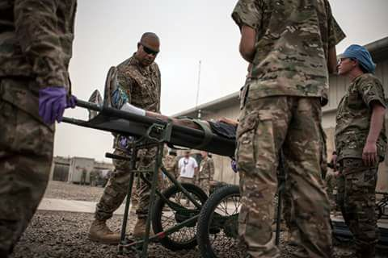

As I prepared for a deployment to Iraq, I expected the Army to hand over a decision. I would either compete for promotion or would have to retire...

The Army's version of a "Pink Slip"
It was early 2017, and after serving 24 years, being a soldier was my profession. I gave my very best to taking care of my team and the mission, but I knew that at some point it had to end. Shortly after my arrival, I learned that I would retire in April of 2019. The Army's version of higher tenure, a "move up or move out" type police applied to me.
Time seemed to move at an accelerated pace as I tried to wrap my mind around all of the things I needed to accomplish. Navigating the job application process was a nightmare and I was quickly overwhelmed by the many differences between the Army and corporate America.Mass Cassualty Exercise, Iraq, 2017Helping Hands = Peace of Mind
Thankfully, I found free resources that gave me tools to help my voyage. An early stop was at the USO Pathfinder® Transition Program. The transition specialist sent me home with a binder full of information.
The Pathfinder Program was the key to unlock what seemed to be and endless list of powerful partners who were dedicated to helping service members complete a successful transition. The ones I found most helpful were:Free Resources!
Although this is not a comprehensive list of agencies, they all provide free assistance to veterans AND their family members:
- American Corporate Partners
- Hire Heroes USA
- Veterati
- Hire our Heroes
Check out our Resources page for these and other useful links.What They Did For Me
The agencies and organizations listed above provided excellent resources for free. One organization took all performance evaluations and military award citations and converted it to a resume!
Others paired me with mentors - people with like backgrounds or working in the field I was interesting in joining. They spent hours helping me understand what was missing from my resume and why. They shared their own scary stories and encouraged me to trust in myself and the process.Punched in the gut...
Ultimately, it came down to the wire after over 26 years of being employed full-time, I found myself applying for unemployment benefits. Nevertheless, I continued to interview for jobs.
Success!
The transition process was still the scariest part of my adult life, and while it did not happen on my schedule, I found an amazing opportunity in the city where we wanted to relocate to . With the help of my family and the amazing staff from the groups listed above, I successfully started my post-Army life.